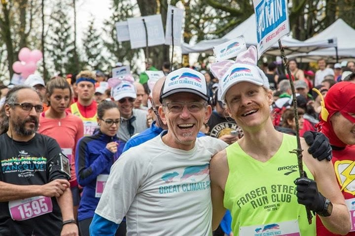
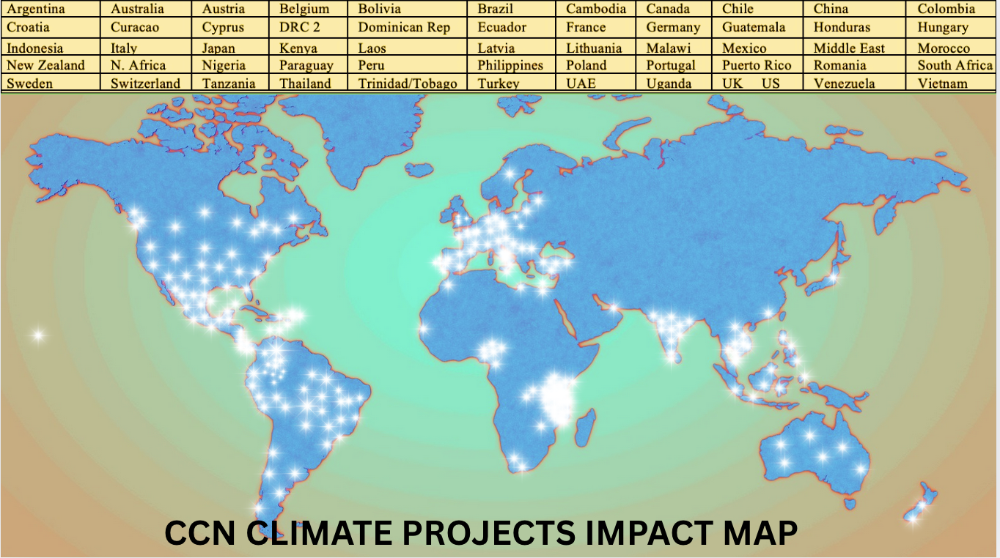
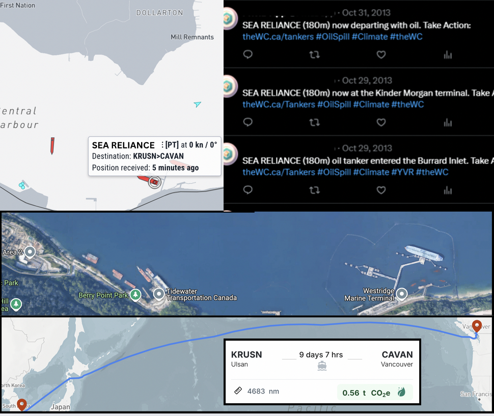
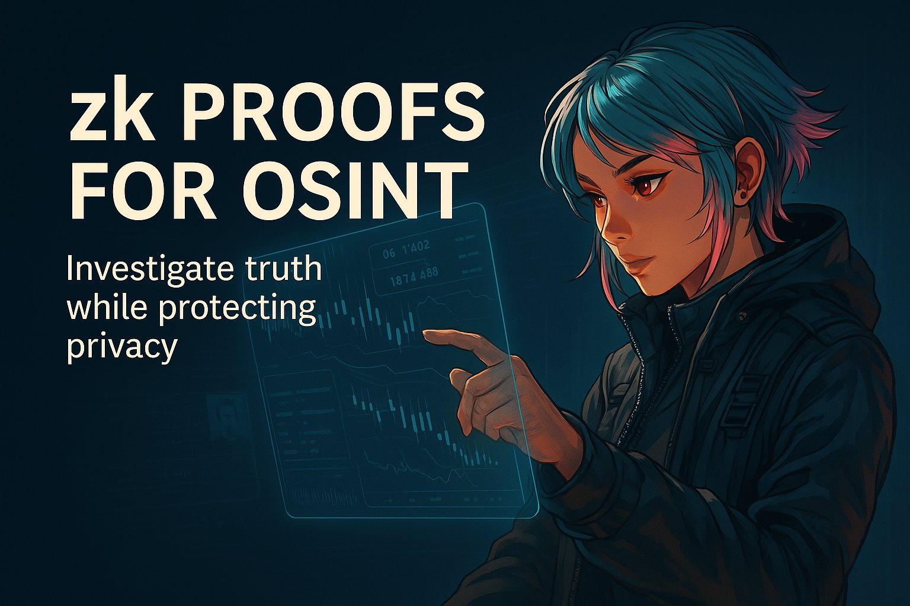

Impact Chronicle #1: Making action viral with The Great Climate Race
The great climate race was an innovative event series as well as a peer-to-peer fundraising application that enabled runners and walkers to raise money for solar projects to be donated to non-profit organizations and generate electricity for their buildings for decades to come. This campaign not only expanded the base of who was involved in climate campaigns but also helped drive awareness about the viability and benefits of climate solutions tech in the real world.
The Results
Funded dozens of solar projects in partnership with other groups including the roof of the Vancouver Central Library, A remote Orca research facility, First Nations communities transitioning off diesel generators and more
Impact Chronicle #2: Climate Co-ordination Network
Creating solutions that empower digitally native communities to fund early stage climate projects around the world
Climate Coordination Network
Through strategic grant distribution coupled with support, we empowered climate projects dedicated to reducing greenhouse gas emissions and serving as essential core infrastructure for web3 climate solutions.
"Grants shouldn't require a PhD in bureaucracy"
Impact Chronicle #3: Tanker Tracker: Transparency as Participation
Imagine protesting a problem you can't see. Now imagine your phone lighting up with proof: another million-barrel shipment, another port stacked with climate risk, another moment to remind people of the risks; to the local economy, to our health and to the Orca's and other wild creatures that call our shorelines home. Our tanker tracker weaponized transparency, turning shipping routes into a live feed of the system we need to change.
Impact Chronicle #4: Blockchain for Climate Solutions - Indepth Report for Ethereum Foundation

Legacy systems for tracking emissions and financing climate action are plagued by inefficiency, opacity, and broken trust. But while blockchain's decentralized architecture offers tools (such as transparency, automation, and trustless verification) to rewrite the rules; its adoption isn't without risks. From the energy-intensive systems (largely phased out by Ethereum's upgrade) to rampant scams and speculative chaos in crypto markets, the technology's pitfalls are real.
Our research for the Ethereum Foundation tackled this duality head-on. We mapped where blockchain could add unique value to climate action and where it could backfire. Our intent was to research and deliver an unbiased, open-minded report.
- Highlighted supply chains (like Walmart's Hyperledger system, cutting mango provenance checks from 7 days to 2.2 seconds) and carbon markets as prime targets for blockchain's middleman-slashing efficiency.
- Called out energy grids (e.g., decentralized solar microgrids) as opportunities; if built on low-energy chains.
- Warned against greenwashing: Not all "on-chain" carbon credits are equal, and scams thrive where oversight is weak.
- Verified emissions tracking (no more double-counting)
- Direct funding for Indigenous stewards (cutting profit-skimming intermediaries)
- Peer-to-peer energy trading (powered by smart contracts, not spreadsheets)
"The lesson? The tech's potential is real but only if we divorce it from crypto's Wild West and deploy it where it actually fixes problems, not where it creates new ones."
Impact Chronicle #5: Pretty Good OSINT Protocol (PGOG)
Privacy-first intelligence tools for the people. OSINT tools are often locked behind paywalls or used by powerful groups, leaving journalists, activists, and researchers exposed. PGOP bundles offline-ready, open-source investigation tools into one secure container, no cloud, no tracking. When you democratize intelligence anyone can investigate safely and fight surveillance asymmetry. Small teams now have big-league tools.